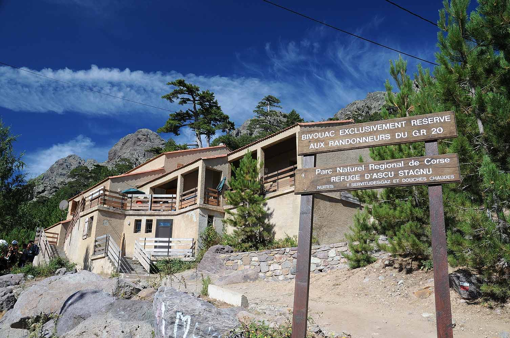

Ezen a szinte valószerűtlen, 1450 méteres magasságban elterülő bázison a mediterrán sziget hirtelen drámai arcot vált, és átadja helyét a hamisítatlan alpesi törvényeknek. A növényzet itt már szívósabb, a lágy makkiflóra helyét átveszi a csupasz kő és a kopár, monumentális sziklafalak dominanciája, miközben a hőmérséklet akár 10-15 fokkal is elmaradhat a tengerparti síkságok mögött. Ebben a magasságban a hegy már nem pusztán látványos háttérként funkcionál, hanem a program abszolút főszereplőjévé válik. A gyorsan változó időjárás, a hirtelen leereszkedő felhők és a mindent átható monumentális csend folyamatos alázatra és éberségre inti az ide érkező vándort.
Haut-Asco történelme és jelene egy különleges kettősségen alapszik, hiszen a helyszín a sziget kevés, legendás síterepeinek egyike, amely a téli hónapokban a havas sportok elszigetelt birodalma. A nyári időszakban ugyanez a fenséges végpont teljesen átalakul: a túrázók, a kanyargós szerpentineket hódító motorosok és a tiszta levegőt kereső kalandorok nyüzsgő találkozópontjává válik. Mielőtt bárki elindulna a környező ösvényekre, érdemes itt egyfajta dekompressziós szünetet tartani, rétegesen felöltözni, és egy utolsó kávé mellett, a sziklák felett belesimulni abba a lassú, megfontolt ritmusba, amelyet a magashegy kérlelhetetlen világa megkövetel.
Logisztikai és biztonsági szempontból Haut-Asco a sziget legfontosabb magashegyi gerinctúrájának, a hírhedt GR20-nak az egyik legkritikusabb csomópontja. Ez az a pont, ahol a vadon és a civilizált infrastruktúra találkozik: a menedékház környéke létfontosságú bázis a vízkészletek feltöltésére, az erőnlét felmérésére, valamint a kockázatkezelési döntések meghozatalára. Bár a komolyabb csúcstámadásokhoz elengedhetetlen a kora hajnali indulás, a kevésbé gyakorlott utazók számára a kijelölt rövidebb ösvények is felejthetetlen élményt nyújtanak. Különösen az alkonyati órákban érdemes itt elidőzni, amikor a lemenő nap fénye vörösre gyújtja a hatalmas gránitfalakat, miközben a gyorsan hűlő levegő emlékeztet a természet örök és megalkuvást nem tűrő erejére.